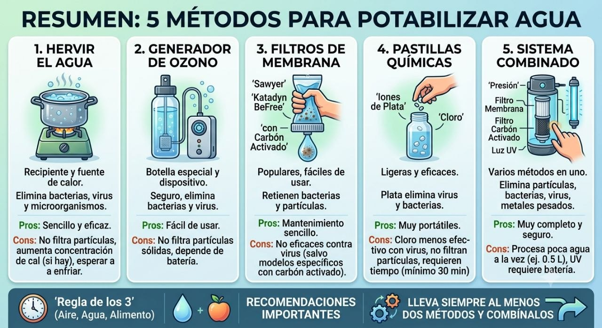
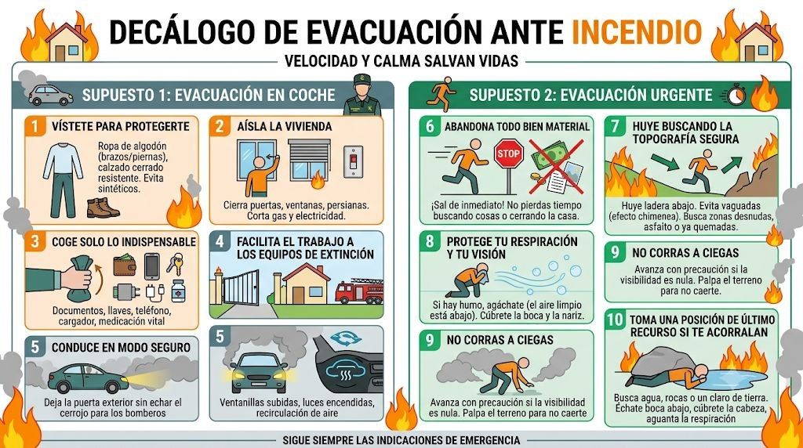
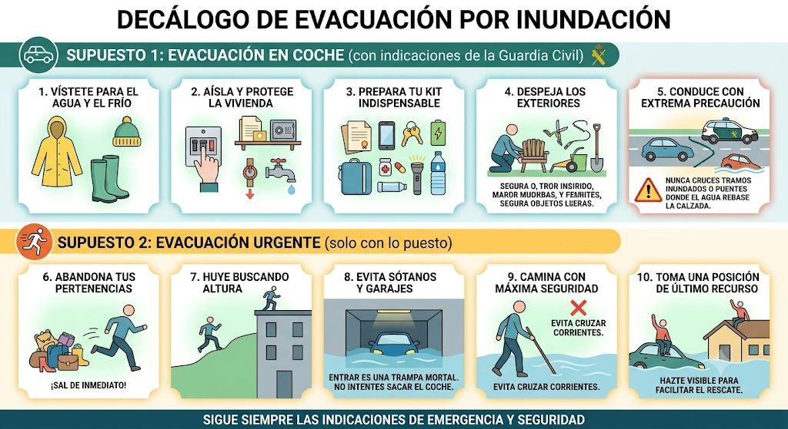

5 métodos para potabilizar agua
5 métodos para potabilizar agua
Vídeo demostrativo sobre cómo hacer potable el agua en contexto de preparacionismo. A continuación, un resumen visual con los cinco métodos principales.
Resumen del vídeo (5 métodos principales)
- Hervir el agua [00:36]
Es el método más sencillo y conocido. Requiere un recipiente y una fuente de calor. Elimina bacterias, virus y microorganismos. Sin embargo, no filtra partículas y, si el agua tiene cal, la concentración de esta aumenta con la evaporación. Además, hay que esperar a que se enfríe para beberla.
- Generador de ozono [05:45]
Se utiliza una botella especial con un dispositivo que genera burbujas de ozono. Es seguro, elimina bacterias y virus, y es fácil de usar. Como desventajas, no filtra partículas sólidas y depende de una batería que debe recargarse.
- Filtros de membrana [09:04]
Son populares y fáciles de usar. Retienen bacterias y partículas. Algunos modelos vienen con su propia botella. Su mantenimiento es sencillo (limpiándolos con una jeringuilla o enjuagándolos). No son eficaces contra virus, a menos que incluyan carbón activado.
- Pastillas químicas [13:41]
Se utilizan pastillas de iones de plata o de cloro, que se añaden a un recipiente con agua. Son ligeras y eficaces. Las de plata eliminan virus y bacterias, pero las de cloro no son tan efectivas con los virus. No filtran partículas y requieren al menos media hora para hacer efecto.
- Sistema combinado [16:22]
Este método integra varios sistemas en uno. Utiliza un recipiente donde se ejerce presión para pasar el agua a través de un filtro de membrana y otro de carbón activado, y finalmente una luz ultravioleta. Elimina partículas, bacterias, virus y metales pesados. Su principal desventaja es que solo procesa medio litro a la vez y la luz ultravioleta requiere batería.
Recomendaciones importantes
- 🕒 **Regla de los 3**: aire, agua y alimento son críticos para la supervivencia (prioriza el agua).
- 💡 **Lleva siempre al menos dos métodos y combínalos** para aumentar la seguridad.
Enlace al vídeo: YouTube — 5 métodos para potabilizar agua
Aplicación en preparacionismo: el agua potable es el recurso nº 1 tras el aire. Disponer de métodos redundantes (p. ej. hervir + pastillas, o filtro + UV) garantiza agua segura aunque falle uno.

Agricultura urbana (Mi casa, mi huerta)
Agricultura urbana — "Mi casa, mi huerta"
Guía de técnicas de agricultura urbana del programa **Pro Huerta** (INTA + Ministerio de Desarrollo Social, Argentina). 66 páginas, texto completo. Autores: Janine Schonwald y Francisco Pescio.
Descargar: Agricultura_urbana.pdf (15 MB)
Resumen del contenido
Publicación didáctica para habitantes de ciudad que quieren emprender una huerta en casa **sin terreno suficiente**: patios, balcones, terrazas y techos. Promueve la **agroecología** y la autoproducción familiar de alimentos sanos.
Temas principales (índice):
- Antes de comenzar: sol, agua, semillas/plantines, cercos y sombras, herramientas, tierra.
- Huerta en envases: sustrato (organoponía), canteros, bateas, tarimas soleadas, bolsas, huertas verticales, frutilleras, enredaderas, contenedor autoirrigable.
- Siembra: almácigos, transplante, invernadero reciclado "Doble L".
- Fertilidad agroecológica: abono y aboneras, asociación y rotación de cultivos.
- Cuidado y mantenimiento: protección, riego, cosecha, plagas/enfermedades, preparados caseros.
- Postales de pequeños espacios, cuadro planificador y contactos Pro Huerta.
Puntos clave extraídos
Sustrato (organoponía, técnica cubana de 20+ años): mezclar 1 parte de tierra + 1 parte de arena/viruta/cascarilla de arroz + 3 partes de abono orgánico maduro. Permite cultivar donde el suelo es poco fértil, en macetas, bateas, tarimas, bolsas o caños.
Riego: regar hasta que el drenaje inferior del envase comience a gotear; frecuencia diaria pero sin encharcar (el exceso de humedad enferma las plantas). Existen sistemas con botellas recicladas (aspersión/goteo).
Protección: en verano, reparos con ramas/arpillera/media sombra; en frío, plástico sin tocar la planta, sujetado con piedras, destapando a menudo. Cubrir el suelo con pasto seco/cartón evita malezas y erosión.
Control de plagas: preparados caseros (p.ej. a base de plantas) en lugar de agroquímicos.
Aplicación en preparacionismo: producción propia de alimentos frescos en espacios reducidos y con materiales reciclados, sin dependencia de insumos externos ni transporte — clave para resiliencia alimentaria urbana.
Cómo usar una gasa hemostática
Cómo usar una gasa hemostática
Vídeo demostrativo (35 s) del Sargento Héctor G. Bernal sobre el uso de una gasa hemostática en primeros auxilios (técnica militar / US Armed Forces).
Resumen
Una **gasa hemostática** es un apósito impregnado con agentes que aceleran la coagulación (p. ej. kaolín o quitosano), usado para controlar hemorragias graves cuando la presión directa no basta. El procedimiento básico en el vídeo:
- Aplicar la gasa directamente sobre la herida sangrante.
- Mantener presión firme y sostenida sobre la zona.
- Asegurar el vendaje para mantener la presión mientras se busca atención avanzada.
Enlace al vídeo: YouTube — Como usar una gasa hemostatica
Aplicación en preparacionismo: elemento clave del botiquín de primeros auxilios para hemorragias graves; complementa el Manual de Primeros Auxilios (ver categoría Salud).
Decálogo: qué hacer si te evacuan de casa por un incendio cercano
- Decálogo de Evacuación ante Incendio
En un incendio forestal o urbano, la rapidez y la frialdad al tomar decisiones son las que salvan vidas. Aquí tienes un decálogo fundamental con instrucciones precisas.
Supuesto 1: Evacuación en coche (con indicaciones de la Guardia Civil)
_En este escenario tienes un mínimo margen de tiempo y la posibilidad de salir en vehículo bajo la coordinación de las autoridades._
- Vístete para protegerte: Ponte ropa de algodón (nunca tejidos sintéticos porque se derriten con el calor) que cubra brazos y piernas, además de calzado cerrado resistente.
- Aísla la vivienda: Cierra todas las puertas, ventanas y persianas. Corta los suministros principales de gas y electricidad para evitar explosiones en el interior de la casa si el fuego la alcanza.
- Coge solo lo indispensable: Lleva contigo tu cartera con documentación, las llaves de casa, tu teléfono móvil, un cargador y cualquier medicación vital que tomes a diario.
- Facilita el trabajo a los equipos de extinción: Deja la puerta de la valla exterior o el portón sin cerrar con llave para que los bomberos puedan entrar fácilmente a defender tu casa si es necesario.
- Conduce en modo seguro: Durante el trayecto detrás de la Guardia Civil, mantén las ventanillas completamente subidas, enciende las luces de cruce para que te vean entre el humo y pon el sistema de ventilación del coche en recirculación interior para no aspirar aire tóxico.
Supuesto 2: Evacuación urgente (solo con lo puesto)
_El fuego es inminente, no hay tiempo para preparativos ni para sacar el coche. La supervivencia inmediata es la única prioridad._
- Abandona todo bien material: No pierdas ni un solo segundo buscando documentos, dinero, recuerdos o intentando cerrar la casa. La prioridad absoluta y exclusiva eres tú; sal de inmediato.
- Huye buscando la topografía segura: El fuego avanza mucho más rápido cuesta arriba. Huye siempre ladera abajo, alejándote de las vaguadas (que hacen efecto chimenea) y busca zonas desprovistas de vegetación, asfalto o áreas que ya se hayan quemado.
- Protege tu respiración y tu visión: Si hay densidad de humo, agáchate lo máximo posible al moverte (el oxígeno limpio está a ras de suelo) y cúbrete la boca y la nariz con tu propia ropa.
- No corras a ciegas: Si la visibilidad es nula, avanza con precaución palpando el terreno para no sufrir caídas por barrancos o desniveles que te incapaciten para seguir huyendo.
- Toma una posición de último recurso si te acorralan: Si el fuego te rodea por completo y no hay salida, busca una balsa de agua, una zona rocosa o un claro de tierra desnuda. Échate al suelo boca abajo detrás de alguna roca o desnivel, cúbrete la cabeza con tu ropa y aguanta la respiración mientras pasa el frente de llamas.

Evacuación por inundación
- Decálogo de Evacuación por Inundación
Las inundaciones son extremadamente peligrosas por la fuerza del agua y lo imprevisible de las corrientes. Al igual que con el fuego, la rapidez es fundamental, pero en este caso la prioridad absoluta es ganar altura y evitar cualquier cauce. Aquí tienes el decálogo adaptado a este riesgo, dividido en los mismos dos supuestos:
Supuesto 1: Evacuación en coche (con indicaciones de la Guardia Civil)
_En este escenario cuentas con un mínimo margen de tiempo y la evacuación está siendo coordinada por las autoridades._
- Vístete para el agua y el frío: Utiliza ropa impermeable, abrigo y, sobre todo, botas de agua o calzado cerrado con suela gruesa y fuertemente antideslizante.
- Aísla y protege la vivienda: Corta el suministro de electricidad, agua y gas. Sube a los pisos superiores los productos químicos (como lejía o pintura), documentos importantes y objetos de valor para que no contaminen el agua ni se destruyan.
- Prepara tu kit indispensable: Lleva contigo tu cartera con documentación, las llaves, tu teléfono móvil, una batería externa, medicación vital que tomes a diario, una linterna y agua potable embotellada.
- Despeja los exteriores: Mete dentro de casa o amarra firmemente los muebles de jardín, herramientas y cualquier objeto suelto en el patio; el agua puede arrastrarlos y convertirlos en proyectiles que dañen estructuras o bloqueen desagües.
- Conduce con extrema precaución: Sigue estrictamente la ruta indicada por la Guardia Civil. Nunca cruces tramos inundados ni puentes donde el agua rebase la calzada; tan solo 30 centímetros de agua en movimiento pueden hacer flotar y arrastrar a la mayoría de los vehículos.
Supuesto 2: Evacuación urgente (solo con lo puesto)
_El nivel del agua sube rápidamente o hay una riada inminente. No hay tiempo para sacar el coche ni recoger cosas. Tu vida es la única prioridad._
- Abandona tus pertenencias: No pierdas ni un solo segundo recogiendo enseres materiales o intentando salvar bienes. El agua sube a una velocidad engañosa; sal de inmediato.
- Huye buscando altura: Aléjate rápidamente de ríos, ramblas, barrancos, cauces secos y zonas bajas. Busca terrenos elevados, colinas o los pisos más altos de los edificios de hormigón cercanos.
- Evita sótanos y garajes bajo ningún concepto: Bajar a por el coche es una trampa mortal. Los garajes subterráneos se inundan en cuestión de segundos y la presión del agua bloqueará las puertas desde el exterior, impidiendo cualquier posibilidad de escape.
- Camina con máxima seguridad: Si te ves obligado a caminar por zonas inundadas, usa un palo o bastón para tantear el suelo delante de ti, ya que pueden faltar tapas de alcantarilla o haber socavones ocultos. Evita cruzar corrientes; 15 centímetros de agua a gran velocidad bastan para derribar a un adulto.
- Toma una posición de último recurso si te acorralan: Si el agua te atrapa dentro de tu vehículo y el nivel sigue subiendo, sal inmediatamente por la ventana y súbete al techo. Si estás en una vivienda y el agua te rodea por completo, sube al tejado o a la terraza más alta posible y hazte visible para facilitar el rescate aéreo o en embarcación.

Luz de emergencia con sal y aceite (apagón)
Luz de emergencia con sal y aceite (apagón)
Vídeo "LUZ con SAL y ACEITE — El Truco Casero que Funciona en un APAGÓN" (2:41).
Resumen (de la descripción del vídeo)
Cómo hacer una **luz de emergencia casera para apagones con sal y aceite**, ideal cuando hay cortes de suministro eléctrico. Es la técnica más utilizada antaño por nuestros abuelos.
Si te quedas sin electricidad, esta solución es **fácil, económica y efectiva**: con solo un bote de cristal, sal, aceite y un trozo de tela. Puede sustituir o complementar otras opciones (baterías, LED, luz de camping, linternas, etc.).
Enlace al vídeo: YouTube — LUZ con SAL y ACEITE (apagón)
Aplicación en preparacionismo: fuente de iluminación de respaldo de coste casi nulo con materiales domésticos, clave en un plan de emergencia ante apagones prolongados.
Manual PMR walkies (Aliexpress)
Manual de walkie-talkie PMR (Aliexpress, b/n)
Manual de usuario de un transceptor PMR portátil (walkie-talkie de mano, versión blanco y negro adquirida en Aliexpress). Documento de 4 páginas en inglés, escaneado.
Descargar: Manual_PMR_walkies.pdf (1,5 MB)
Resumen del contenido
Página 1 — Getting Started
- Diagrama de componentes: antena, tecla PTT (transmisión), tecla ON/OFF, CH/VOL+ y CH/VOL− (canal/volumen), entrada de micrófono (MIC jack), interfaz de auricular y programación, puerto de carga TYPE-C y altavoz.
- Accesorios estándar: cable USB (1), adaptador (1), clip para cinturón (1) y correa de mano (1).
Páginas 2-4 — One-click Frequency and Code Decryption
Función de descifrado de frecuencia y código con un solo clic, para sincronizar con la mayoría de walkie-talkies analógicos del mercado. Distingue dos modos:
- Modo de descifrado ordinario:
# Con el equipo apagado, mantener pulsadas PTT + ON/OFF hasta oír tres pitidos "dididi" y ver parpadear alternamente los indicadores rojo/verde → entra en "Etapa 1 de medición de frecuencia".
# Cambiar de canal con el interruptor de codificación → "Etapa 2".
# Transmitir continuamente con el walkie objetivo; al oír "da" con dos destellos rojos, la frecuencia queda guardada en el canal actual y ya pueden hablar.
- Modo de descifrado súper: igual pero pulsando PTT + MONI (▲) + ON/OFF. Tarda más; reintentar si falla la primera vez.
- Tono final "croak": se activa/desactiva (sonidos "di" / "didi") manteniendo ▲ + ON/OFF al encender.
Aplicación en preparacionismo: equipo de comunicaciones de corto/medio alcance, carga por USB-C, y útil por su capacidad de clonar frecuencias de otros equipos analógicos sin software.
Manual UV-K5(8) (walkie multi-banda)
Manual UV-K5(8) — walkie multi-banda
Manual de usuario del transceptor **Quansheng UV-K5(8)**, equipo de radioaficionado de doble banda (UHF/VHF) con recepción multi-banda. 14 páginas, texto completo.
Web de referencia (review/hack de estos walkies): AlfaExploit — HamRadio #1
Descargar: UV-K5_8_Users_Manual.pdf (1,9 MB)
Resumen del contenido
Características principales:
- 200 canales + 10 canales de emergencia meteorológica (Weather Channels)
- Transmisión doble banda (UHF/VHF) y recepción 50∽600 MHz (AM/FM, banda de aviación, etc.)
- Carga por Type-C y base cargadora; batería de gran capacidad
- Funciones: VOX, escaneo, CTCSS/DCS, DTMF, 10-grupo scrambler, Remote Kill/Revive, copia inalámbrica entre radios, programa en PC
- Modos: frecuencia/canal, doble vigilancia (dual-watch), intercomunicación cross-band
- 3 niveles de potencia (H/M/L), tono de llamada 1750 Hz, alarma de emergencia, linterna
Precauciones y carga (destacado):
- No transmitir sin antena instalada ni durante la carga (daña el equipo).
- Type-C solo para carga de emergencia; usa la base para carga normal.
- No exponer a sol directo, calor, polvo extremo o humedad; usar batería y antena originales.
- Distancia mínima de 25 mm de la cara al transmitir (límites SAR).
Índice del manual:** accesorios, diagrama, pantalla LCD, botones (PTT, teclas programables), menú, operaciones comunes (contraseña, modo canal/frecuencia, escaneo, CTCSS/DCS, DTMF, alarma, radio FM, clima, bloqueo, reset, replicación inalámbrica), y especificaciones.
Aplicación en preparacionismo:''' equipo polivalente de comunicaciones de mayor alcance y capacidad que los PMR básicos; útil por su recepción multi-banda (incl. aviación y clima) y programabilidad para redes de emergencia. Requiere licencia de radioaficionado para transmitir en bandas asignadas.
Manual de primeros auxilios (Min. Salud Arg.)
Manual de Primeros Auxilios y Prevención de Lesiones
Guía oficial del **Ministerio de Salud de la Nación (Argentina)** — Dirección Nacional de Emergencias Sanitarias. 42 páginas, texto completo. Dirigida a la comunidad para prevenir, reconocer y asistir a víctimas de incidentes en hogar, escuela, trabajo o vía pública.
Descargar: Manual_primeros_auxilios.pdf (1,8 MB)
Resumen del contenido
Temas (índice):
- Introducción y generalidades de primeros auxilios
- Evaluación general de la víctima
- Cadena de vida (llamado a emergencias — en AR: **107**)
- RCP básico: adultos/niños, lactantes, posición de seguridad
- **DEA** (Desfibrilador Externo Automático)
- **Atragantamiento — Maniobra de Heimlich**
- Incidentes frecuentes: quemaduras, caídas/fracturas, heridas, intoxicación, electrocución, ACV, convulsiones, desmayo, cuerpo extraño en ojo/oído/nariz, epistaxis
- Traumatismos severos en vía pública (politraumatismos)
- **Botiquín de primeros auxilios**
Puntos clave extraídos
Cadena de vida: 1) llamar al sistema de emergencias (107 en AR, gratuito), 2) conservar la vida aplicando conocimientos básicos, 3) asegurar atención avanzada y traslado.
RCP: reanimación cardio-pulmonar básica para adultos, niños y lactantes; incluye posición de seguridad de la víctima. Si hay DEA disponible, usarlo siguiendo sus instrucciones (enciende, sigues indicaciones, descarga sin tocar a la víctima).
Heimlich: maniobra para atragantamiento (obstrucción de vía aérea por cuerpo extraño).
Traumatismos en vía pública: NO exponerse (no ser otra víctima), NO mover a la víctima (riesgo de lesión medular/cervical), iniciar cadena de vida, comprimir hemorragias externas importantes si está solo, contener a curiosos.
Botiquín: lista de elementos esenciales para asistencia básica.
Aplicación en preparacionismo: conocimiento crítico de supervivencia para el hogar y grupo familiar; el botiquín y las técnicas RCP/Heimlich son base de cualquier plan de emergencia.
Manual de radioaficionado novicio
Manual de Radioaficionado — Categoría Novicio
Manual de formación para obtener la primera inscripción en el Registro Especial de Radioaficionados. 83 páginas, texto completo. Prepara para el examen (legislación, teoría básica de radio, práctica operativa y código Morse).
Descargar: manual-radioaficionado-novicio.pdf (1,4 MB)
Resumen del contenido
Conceptos base:
- Qué es la radioafición (Servicio de Aficionados, según UIT): instrucción individual, intercomunicación y estudios técnicos, sin fines de lucro.
- Indicativos de llamada (prefijos mundiales: AA/K/N/W → EE. UU.; HI → Rep. Dominicana, etc.) y requisitos de autorización por cada Administración.
- Código del radioaficionado: considerado, leal, progresista, amigo de todos, disciplinado, patriótico.
- Rol en emergencias/desastres (reconocido por la UIT).
Fundamentos técnicos (teoría):
- Electricidad y estructura de la materia (átomo, molécula, electrones).
- Corriente, tensión, frecuencia (ciclos por segundo) y potencia de radiofrecuencia.
- Inductores, condensadores, transformadores, sintonía de frecuencia.
- Tubos, transistores, funcionamiento de transmisores y receptores.
- Antenas: principios de radiación, diseño y eficiencia.
Operación y regulación:
- Bandas de frecuencia asignadas por la UIT y particularizadas por cada gobierno.
- Reglamento para el Servicio de Radioaficionados (legislación nacional).
- Código Morse y alfabeto.
- Q-códigos (QRG, QRH, QSY, QUF socorro/emergencia, etc.) y abreviaturas operativas.
Aplicación en preparacionismo: la radioafición es pieza clave de comunicaciones en emergencias cuando caen redes celulares; este manual es la base para entender equipos, antenas y procedimiento de llamada de socorro (QUF/emergencia). Complementa los walkie PMR del otro manual.
Presentación
Bienvenido a la Wiki de Preparacionismo
Esta es una recopilación de recursos, técnicas y materiales para la preparación y la resiliencia personal y familiar.
Los contenidos se organizan por categorías:
Cada artículo puede incluir texto, imágenes y vídeos almacenados localmente. Usa el buscador o las etiquetas para navegar.
Cómo colaborar: los artículos se añaden desde el asistente (Hermes) y se publican automáticamente mediante GitHub Pages.
Retekess V115 — radio portátil todo en uno
Retekess V115 — radio portátil todo en uno
Análisis en vídeo de la **Retekess V115**, una radio de bolsillo que combina varias funciones útiles en preparacionismo: radio (AM/FM/onda corta SW), reproductor MP3, grabadora de voz y almacenamiento de datos, con batería recargable. Se incluyen dos reseñas complementarias.
Vídeo 1 — Retekess V115: una radio, un MP3, una grabadora y un dispositivo de almacenamiento de datos
Vídeo 2 — RETEKESS V115: esta radio portátil de Amazon es una pasada
Resumen
La **Retekess V115** es una radio de bolsillo (AM/FM/SW, onda corta) que además funciona como:
- Reproductor **MP3**.
- **Grabadora de voz**.
- **Dispositivo de almacenamiento de datos** (memoria interna/SD).
- Con **batería recargable**.
El segundo vídeo recorre el equipo por partes (timestamps): introducción (00:00), características técnicas (00:50), desempaquetado (01:37), exterior (03:04), encendido (05:53), radio/MP3 (07:35) y grabadora de voz (08:35).
Enlaces:
Aplicación en preparacionismo: equipo de comunicación e información compacto y de bajo consumo, ideal para recibir noticias/avisos en onda corta durante cortes de red, grabar mensajes y llevar MP3 de instrucciones offline. Complementa los manuales de radioaficionado y los walkies de la categoría Comunicaciones.
Supervivencia: agua, fuego, cocina y herramientas improvisadas
Supervivencia: agua, fuego, cocina y herramientas improvisadas
Vídeo demostrativo de técnicas de supervivencia con recursos del entorno. A continuación, el resumen por bloques temáticos.
Resumen
- Agua
Métodos rudimentarios e improvisados para filtrar agua turbia de la naturaleza, embotellarla y hervirla para hacerla segura para el consumo.
- Fuego
Distintas formas creativas de iniciar y mantener una fogata utilizando tanto elementos cotidianos (como pilas, envases o algodón) como recursos naturales, además de técnicas para crear mechas y yesca.
- Cocina de campamento
Trucos para preparar, calentar y cocinar alimentos al aire libre (como asar maíz o hervir huevos) construyendo soportes improvisados con ramas y envases metálicos reciclados.
- Herramientas e ingenio
Ideas para improvisar utensilios, reparar mangos de cuchillos con cuerda paracord, crear antorchas caseras y fabricar asas o soportes para transportar leña y agua utilizando los recursos del entorno.
Enlace al vídeo: YouTube — Supervivencia: agua, fuego, cocina y herramientas
Aplicación en preparacionismo: estas técnicas de bajo coste y alto ingenio son la base de la autonomía en situaciones sin suministros; complementan el artículo de potabilización de agua (categoría Agua/Salud) y los decálogos de evacuación.
Técnica de gancho de emergencia (iPaul)
Técnica de gancho de emergencia (日本防災士)
Vídeo demostrativo de un 防災士 (especialista japonés en prevención de desastres) mostrando cómo hacer un gancho de rescate anudando una cuerda a un palo, para recuperar objetos caídos en rendijas estrechas o situaciones de emergencia.
Enunciado original: 演示紧急抓取棒的打结法 — cuando algo cae en una grieta estrecha, también puedes recuperarlo. Súper útil en momentos de emergencia.
Aplicación en preparacionismo: técnica de baja tecnología, útil en buzones, desagües, rendijas de vehículos o estructuras colapsadas donde no llegan las manos.
💧 Agua
Artículos en la categoría Agua:
🥕 Alimentación
Artículos en la categoría Alimentación:
⛺ Refugio
Artículos en la categoría Refugio:
⚕️ Salud
Artículos en la categoría Salud:
📡 Comunicaciones
Artículos en la categoría Comunicaciones:
🛠️ Herramientas
Artículos en la categoría Herramientas: